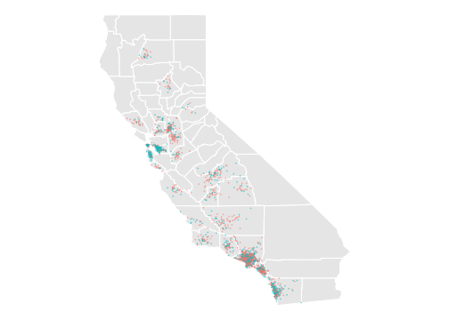
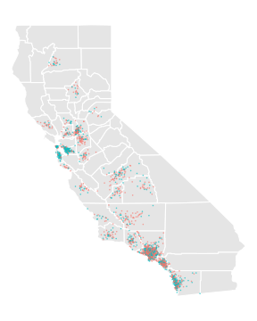
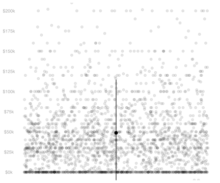
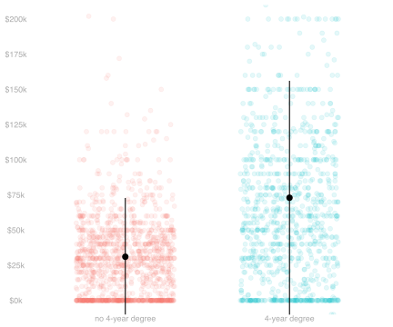
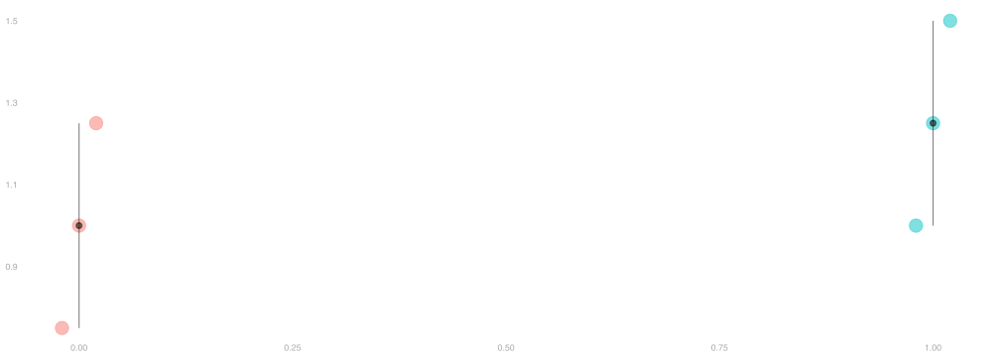
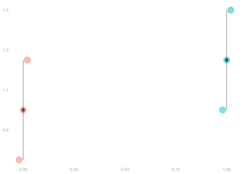

Comparing Two Groups
Recipients of Threatening Letters vs. Others in MI

Figure 1
- The green dots are people who received a letter pressuring them to vote. Figure 2.
- The red dots are people who didn’t.


Population
| income | education | county | |
|---|---|---|---|
| 1 | $50k | 16 | LA |
| 2 | $31k | 12 | unknown |
| 3 | $44k | 16 | LA |
| ⋮ | NA | NA | NA |
| 5677500 | $173k | 12 | orange |
Sample
| income | education | county | |
|---|---|---|---|
| 1 | $266k | 16 | LA |
| 2 | $51k | 13 | san joaquin |
| 3 | $0k | 16 | orange |
| ⋮ | NA | NA | NA |
| 2271 | $45k | 16 | LA |
For illustration, I’ve made up a fake population that looks like a bigger version of the sample.
Our Estimator and Target


Estimation Target
\begin{aligned} \mu(1) - \mu(0) \qfor \mu(x) &= \frac{1}{m_x}\sum_{j:x_j = x } y_j \\ \qqtext{ where } \quad m_x &= \sum_{j:x_j=x} 1 \end{aligned}
Estimator
\begin{aligned} \hat\mu(1) - \hat\mu(0) \qfor \hat\mu(x) &= \frac{1}{N_x}\sum_{i:X_i=x} Y_i \\ \qqtext{ where } \quad N_x &= \sum_{i:X_i=x} 1. \end{aligned}
Population Means and Variances as Expectations


- If a random variable Y is equally likely to be any member of a population y_1 \ldots y_m, …
- … then its expectation is the population mean \mu=\frac{1}{m}\sum_{j=1}^m y_j.
- … and its variance is the population variance \sigma^2 = \frac{1}{m}\sum_{j=1}^m (y_j - \mu)^2.
- Terminology. When each of our observations Y_i is like this, we’re sampling uniformly-at-random.
\begin{aligned} \mathop{\mathrm{E}}[Y] &= \sum_{j=1}^m \underset{\text{response}}{y_j} \times \underset{\text{probability}}{\frac{1}{m}} = \frac{1}{m}\sum_{j=1}^m y_j = \mu \\ \mathop{\mathrm{E}}[(Y-\mathop{\mathrm{E}}[Y])^2] &= \sum_{j=1}^m \underset{\text{deviation}^2}{(y_j - \mu)^2} \times \underset{\text{probability}}{\frac{1}{m}} = \frac{1}{m}\sum_{j=1}^m (y_j - \mu)^2 = \sigma^2 \end{aligned}
Subpopulations and Conditioning


- Conditioning is, in effect, a way of thinking about sampling as a two-stage process.
- First, we choose the color of our dot, i.e., the value of X_i, according to it frequency in the population.
- Then, we choose a specific one of those dots, i.e. J_i, from those with that color—with equal probability.
- Because this is just a way of thinking, each person still gets chosen with probability 1/m.
\begin{aligned} P(J_i=j) = \begin{cases} \frac{m_{green}}{m} \ \times \frac{1}{m_{green}} \ = \ \frac{1}{m} & \text{if the $j$th dot is green ($x_j=1$) } \\ \frac{m_{red}}{m} \ \times \frac{1}{m_{red}} \ = \ \frac{1}{m} & \text{otherwise} \end{cases} \end{aligned}
- The first stage is ‘a coin flip’ that decides whether we roll the ‘red die’ or the ‘green die’ in the second.
- The Conditional Probability of Y_i is the probability resulting from the second stage.
- P(Y_i=y \mid X_i=1) is the probability distribution of Y_i when we’re ‘rolling the green die’.
- P(Y_i=y \mid X_i=0) is the probability distribution of Y_i when we’re ‘rolling the red die’.
- The Conditional Expectation of Y_i is the ‘second stage expected value’ in the same sense.
- \mathop{\mathrm{E}}[Y_i \mid X_i=1] is the expected value of Y_i when we’re ‘rolling the green die’.
- It’s the mean value \mu(1) of y_j in the subpopulation drawn as little green dots.
- \mathop{\mathrm{E}}[Y_i \mid X_i=0] is the expected value of Y_i when we’re ‘rolling the red die’.
- It’s the mean value \mu(0) of y_j in the subpopulation drawn as little red dots.
- The Conditional Variance of Y_i is like this too. It’s the ‘second stage variance.’
- \mathop{\mathrm{\mathop{\mathrm{V}}}}[Y_i \mid X_i=1] is the variance of Y_i when we’re ‘rolling the green die’.
- It’s the variance \sigma^2(1) of y_j in the subpopulation drawn as little green dots.
- \mathop{\mathrm{\mathop{\mathrm{V}}}}[Y_i \mid X_i=0] is the variance of Y_i when we’re ‘rolling the red die’.
- It’s the variance \sigma^2(0) of y_j in the subpopulation drawn as little red dots.
About Conditional Expectations and Variances


- The conditional expectation function \mu(x)=E[Y \mid X=x].
- \mu is a function; evaluated at x, it’s a number. It’s not random.
- It’s the mean of the subpopulation of people with X=x.
- The conditional expectation \mu(X)=E[Y \mid X].
- \mu(X) is the mean of a random subpopulation of people.
- It’s the conditional expectation function evaluated at the random variable X.
- The conditional variance function \sigma^2(x)=E[\{Y - \mu(x)\}^2 \mid X=x].
- \sigma^2 is a function; evaluated at x, it’s a number. It’s not random.
- It’s the variance of the subpopulation of people with X=x.
- The conditional variance \sigma^2(X)=E[\{Y - \mu(X)\}^2 \mid X].
- \sigma^2(X) is the variance of a random subpopulation of people.
- It’s the conditional variance function evaluated at the random variable X.
- This is like what happens with conditional expectations because it is one.
- It’s the conditional expectation of some random variable. What random variable?
- It’s the conditional expectation of the square of \textcolor{#0000FF}{Y-\mu(X)}, a conditionally centered version of Y.
\mathop{\mathrm{\mathop{\mathrm{V}}}}[Y \mid X] = \mathop{\mathrm{E}}[\textcolor{#0000FF}{\{Y-\mu(X)\}}^2 \mid X] \qfor \mu(X) = \mathop{\mathrm{E}}[Y \mid X]
The Law of Iterated Expectations


\mathop{\mathrm{E}}[Y] = \mathop{\mathrm{E}}\sb*{ \mathop{\mathrm{E}}( Y \mid X ) } \quad \text{ for any random variables $X, Y$}
| p | X_i | \mathop{\mathrm{E}}[Y_i \mid X_i] |
|---|---|---|
| \frac{3}{6} | 0 | 1 |
| \frac{3}{6} | 1 | 1.25 |
What is \mathop{\mathrm{E}}[Y_i]?
| p | X_i | \mathop{\mathrm{E}}[Y_i \mid X_i] |
|---|---|---|
| 0.58 | 0 | 29.96K |
| 0.42 | 1 | 73.22K |
What is \mathop{\mathrm{E}}[Y_i]?
Irrelevance of independent conditioning variables


\mathop{\mathrm{E}}[ \textcolor{#118AB2}{Y} \mid \textcolor{#118AB2}{X}, \textcolor{#EF476F}{X'} ] = \textcolor{#118AB2}{\mathop{\mathrm{E}}[ Y \mid X ]} \quad \text{ when $X'$ is independent of $X,Y$ }
Application. When we sample with replacement, the conditional expectation of Y_i given X_1 \ldots X_n is the conditional mean of Y_i given X_i alone.
\mathop{\mathrm{E}}[Y_i \mid X_1 \ldots X_n] = \mathop{\mathrm{E}}[Y_i \mid X_i] = \mu(X_i) \qqtext{ when $(X_1, Y_1) \ldots (X_n, Y_n)$ are independent.}
The Indicator Trick


1_{=x}(X)\mu(X) = \begin{cases} 1 \times \mu(X) & \text{ when } X=x \\ 0 \times \mu(X) & \text{ when } X \neq x \end{cases} = \begin{cases} 1 \times \mu(x) & \text{ when } X=x \\ 0 \times \mu(x) & \text{ when } X \neq x \end{cases} = 1_{=x}(X)\mu(x)
Application.
\mathop{\mathrm{E}}[1_{=x}(X)\mu(X)] = \mathop{\mathrm{E}}[ 1_{X=x} \mu(x) ] = \mu(x) \mathop{\mathrm{E}}[1_{=x}(X)] = \mu(x) \times P(X=x)
Spread Within and Between Groups

- You can think of there being two kinds of variation in a population.
- Within-group variation.
- That’s illustrated above by the ‘arms’ on our subpopulation means in the plot above.
- The arm length is, in fact, the subpopulation standard deviation.
- That’s the square root of the conditional variance function \sigma^2(x) = \mathop{\mathrm{\mathop{\mathrm{V}}}}[Y \mid X=x].
- Between-group variation.
- That’s about the difference between those subsample means.
- One reasonable summary is the standard deviation of the subpopulation means \mu(x) = \mathop{\mathrm{E}}[Y \mid X=x].
Check Your Understanding

- Try to put the three terms into words.
- \mathop{\mathrm{\mathop{\mathrm{V}}}}[Y] is the …
- \mathop{\mathrm{E}}\cb*{ \mathop{\mathrm{\mathop{\mathrm{V}}}}(Y \mid X) } is the …
- \mathop{\mathrm{\mathop{\mathrm{V}}}}\cb*{\mathop{\mathrm{E}}( Y \mid X)} is the …
- Do this in two ways.
- Using ‘Random Variables Language’,
- e.g. ‘the expected value of the conditional variance of Y given X’
- Using ‘Population Language’
- e.g. ‘the variance of income (Y) within the random subpopulation with degree status X’
- Using ‘Random Variables Language’,
Estimating the Variance


\mathop{\mathrm{\mathop{\mathrm{V}}}}[\hat\mu(1) - \hat\mu(0)] = \mathop{\mathrm{E}}\sb*{ \frac{\sigma^2(1)}{N_1} + \frac{\sigma^2(0)}{N_0}} \quad \text{ for } \quad N_x = \sum_{i=1}^n 1_{=x}(X_i)
- This formula includes a few things we don’t know.
- We don’t know the subpopulation standard deviations \sigma(0) or \sigma(1).
- Those are drawn in as ‘arms’ on the subpopulation means in the plot on the left.
- That’s a fake-data plot. It’s an illustration of data we don’t really get to see.
- We also don’t know the expected values of 1/N_1 or 1/N_0.
- We’d need to know some things about the population to calculate those, too.
- In particular, we’d need to know the frequency that x_j=1 in our population.
- What we can do is use our sample to estimate all of those tings.
- We can use the subsample standard deviations \hat\sigma(0) or \hat\sigma(1).
- Those are drawn in as ‘arms’ on the subsample means in the plot on the right.
- That’s a plot of the data we have. Our sample. And they’re about the same length.
- We can use the 1/N_1 and 1/N_0 themselves to estimate their expected values.
- And we can plug those into our variance formula to get an estimate of this variance.
\widehat{\mathop{\mathrm{\mathop{\mathrm{V}}}}}[\hat\mu(1) - \hat\mu(0)] = \frac{\hat{\sigma}^2(1)}{N_1} + \frac{\hat{\sigma}^2(0)}{N_0} \qfor \hat \sigma^2(x) = \frac{1}{N_x} \sum_{i:X_i=x} (Y_i - \hat \mu(x))^2
Activities

| x | N_x | \hat \mu(x) | \hat \sigma(x) |
|---|---|---|---|
| 0 | 260 | 4600 | 5500 |
| 1 | 185 | 6300 | 7900 |
- Use the information in this table to calculate a 95% interval based on normal approximation.
- Compare it to the interval we got using the bootstrap sampling distribution for calibration.
- Suppose we want to know the population difference to within $500 (1978 dollars).
- How can we resize our experiment to make that happen?
- We could restart the experiment, running it exactly as before, to get a larger sample like the one we have.
- In particular, one with the same proportion of participants assigned to treated and control units.
- What sample size would we need to be able to get a 95% confidence interval this accurate?
- It’d be cheaper to increase the size of our control group without actually treating anyone.
- Suppose you can analyze the resulting ‘diluted’ version of our experiment exactly like the original.
- Same variance formula, same N_1, but larger N_0.
- How big do we need to make N_0 to get the desired level of precision?
- Is it even possible without increasing N_1? How precise can we get keeping N_1 as-is?
- You can use a ‘two stage sampling’ argument to think of the ‘diluted’ version of our experiment …
- … as being like the one we ran orginally, but with a different coin to assign treatment.
- In essence, getting assigned treatment in the diluated version requires you to flip heads twice.
- Once to be in the first part of this larger sample—our original sample.
- Once to be in the part of that sample assigned to treatment.
- We can boil those two flips down to one flip of an appropriately weighted coin.
Warm-Up.
Our interval based on normal approximation should be \hat\theta \pm 1.96 \times \hat\sigma_{\hat\theta} where \hat\theta=\hat\mu(1) - \hat\mu(0) is our point estimate and \hat\sigma_{\hat\theta} is an estimate of its standard deviation. That’s roughly \hat\theta \pm 2 \times 670. Pretty similar to our bootstrap interval. Using the formula from Slide 5.13, we calculate it like this.
\begin{aligned} \widehat{\mathop{\mathrm{\mathop{\mathrm{V}}}}}[\hat\mu(1) - \hat\mu(0)] &= \frac{\hat\sigma^2(1)}{N_1} + \frac{\hat\sigma^2(0)}{N_0} \\ &\approx \frac{61.90M}{185} + \frac{30.07M}{260} \\ &\approx 450.24K \approx \hat\sigma_{\hat\theta}^2 \qfor \hat\sigma_{\hat\theta} \approx 670 \end{aligned}
Resizing Part 1.
If we’re resizing our experiment but running as before, we can think of the new subsample sizes as being roughly proportional to the old ones. That is, if our new sample size is \alpha n, then our subsample sizes will be \alpha N_1 and \alpha N_0. Plugging these new sample sizes in our variance formula, we get a simple formula for our our estimator’s standard deviation in this new experiment relative to the old one. It’s just \sigma_{\hat\theta}/\sqrt{\alpha} where \sigma_{\hat\theta} is the standard deviation of our estimator in our original experiment.
\begin{aligned} \mathop{\mathrm{\mathop{\mathrm{V}}}}[\hat\mu(1) - \hat\mu(0)] &= \frac{\sigma^2(1)}{\alpha N_1} + \frac{\sigma^2(0)}{\alpha N_0} = \frac{1}{\alpha} \sigma_{\hat\theta}^2 = \p*{\frac{\sigma_{\hat\theta}}{\sqrt{\alpha}}}^2 \end{aligned}
That is, it’s 1/\sqrt{\alpha} times the quantity we just estimated to be \hat\sigma_{\hat\theta} \approx 670, so it’s sensible to estimate it by \hat\sigma_{\hat\theta}/\sqrt{\alpha}. We want our new interval \hat\theta \pm 1.96\hat\sigma_{\hat\theta}/\sqrt{\alpha} to be \hat\theta \pm 500. The old one, \hat\theta \pm 1.96\hat\sigma_{\hat\theta} \approx \hat\theta \pm 1320, was about 3 times wider than this, so we want \sqrt{\alpha} \approx 3 and therefore \alpha \approx 9. Since we’ve already got a sample of size n, we can run a ‘second wave’ of size (\alpha-1)n \approx 8n to get a big enough sample.
That’s a back-of-the-envelope calculation. If we want to be a bit more precise, we can actually solve for \alpha that equates these two interval widths. \begin{aligned} \frac{1.96\hat\sigma_{\hat\theta}}{\sqrt{\alpha}} = 500 \qfor \alpha = \p*{\frac{1.96\hat\sigma_{\hat\theta}}{500}}^2 \approx 6.92 \end{aligned}
That’s a bit better than 9. It pays to be precise sometimes.
Resizing Part 2. If it’s free to include more participants in our control group, we may as we’ll make N_0 arbitrarily large. If we did, we’d have this variance.
\begin{aligned} \widehat{\mathop{\mathrm{\mathop{\mathrm{V}}}}}[\hat\mu(1) - \hat\mu(0)] &= \frac{\hat\sigma^2(1)}{N_1} + \frac{\hat\sigma^2(0)}{\infty} = \p*{\frac{\hat\sigma(1)}{\sqrt{N_1}}}^2 \approx 580^2 \end{aligned}
The resulting interval would be \pm 1.96 \times 580 \approx \pm 1130. Roughly twice as wide as we want. So we’re not getting the precision we want for free. Thinking back to Part 1, that means we’d want N_1 to be roughly \alpha = 4 times larger. And that’d mean treating roughly (\alpha-1) = 3 more people. That’s a lot cheaper than treating 8 (or really 5.92) times as many people, as we would if we ran our second wave as a scaled-up version of the first.
The Social Pressure Letter

Figure 2
Footnotes
This is really still called the law of iterated expectations.
We showed that on Slide 3.1.